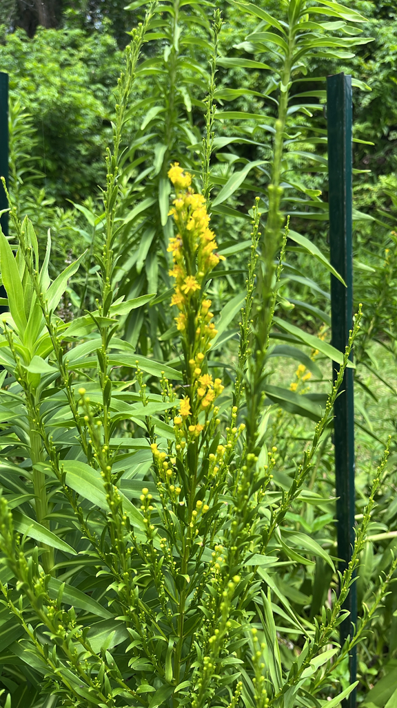

- One of the most productive fall nectar plants for Florida pollinators. The yellow flower plumes in October and November arrive precisely when most other flowering plants are finishing for the year, providing a critical late-season nectar source.
- Goldenrod is falsely blamed for hay fever. The pollen is heavy and sticky — dispersed by insects, not wind. The actual culprit for fall allergies is ragweed, which flowers at the same time but goes unnoticed while goldenrod is conspicuous.
- A Florida native found on coastal dunes and shell mounds from Central Florida southward. More salt and drought tolerant than most goldenrods.
- Distinct from the Northern Goldenrod varieties — this is a genuinely tropical-coast species.
Native to Florida's Atlantic and Gulf coasts and adjacent inland areas, with range extending into the Caribbean. Found on coastal dunes, shell mounds, and disturbed coastal uplands. Member of Asteraceae — the daisy family.
- This goldenrod was spotted in full bloom by an iNaturalist observer and welcomed into the official collection — a community sighting that made it official. It is a recent addition to the butterfly garden, which was refurbished in 2026 and officially designated as a Monarch Waystation in the national registry.
- In late October and November, watch for migrating Monarchs working the flower plumes as they head south.
One of the highest-value fall pollinator plants in the Florida coastal palette. Monarchs on southward migration use the flowers as a critical fuel stop. Bees, wasps, beetles, and other insects work the flower plumes intensively during the brief bloom period.
Seed heads eaten by finches and sparrows after flowering. The erect seed heads persist through winter providing structure and food.
Tiny yellow composite blooms in arching plumes, October-November. The plumes are the visual signature.
Alternate, lance-shaped, somewhat leathery. Lower leaves larger, reducing up the stem.
Upright perennial, 2 to 5 feet, spreading by rhizomes to form colonies.
The arching yellow flower plumes in October-November are unmistakable in their season. Year-round, the upright lance-leaved stems in a spreading colony near the coast.
This isn't an edible plant, but it's harmless — not toxic to people, and not listed as toxic to dogs.


- © Franky McArthur (CC-BY-NC), via iNaturalist
- © Randall Carter (CC-BY-NC), via iNaturalist